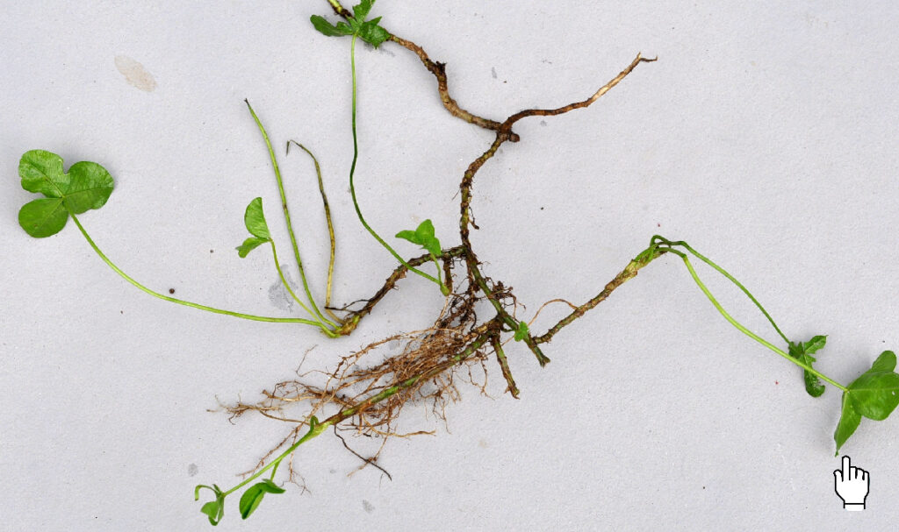
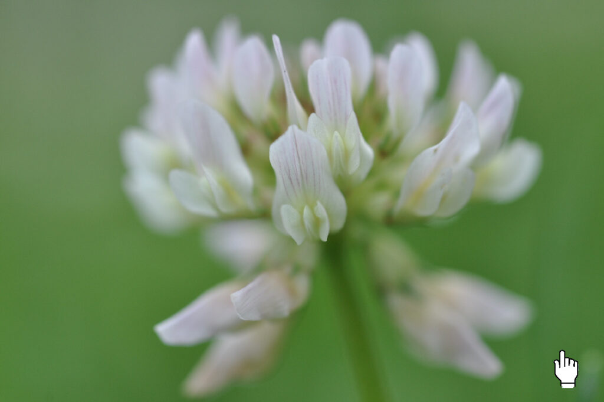
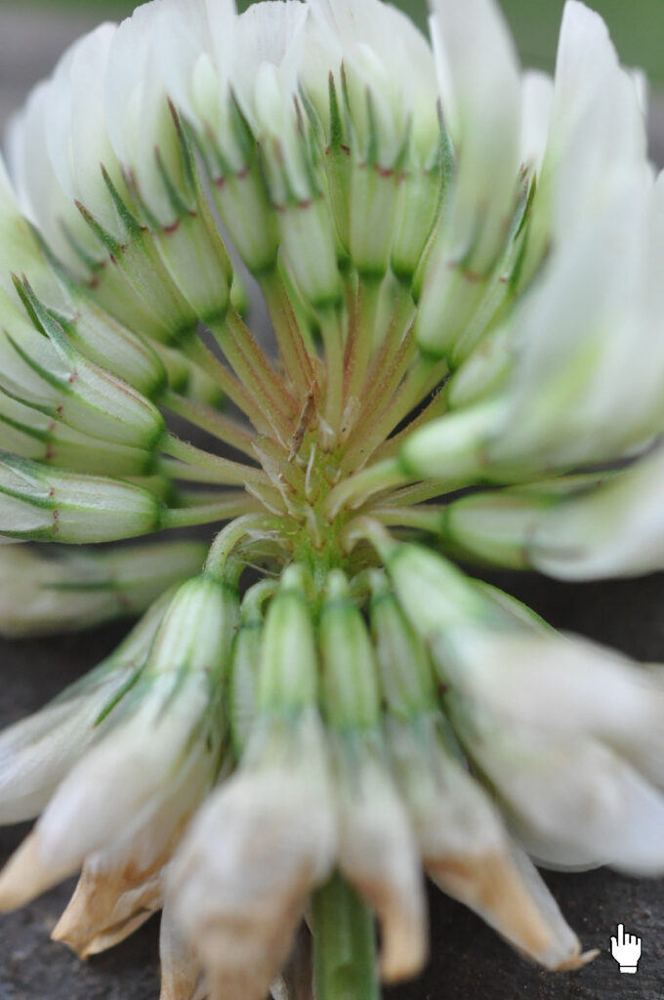
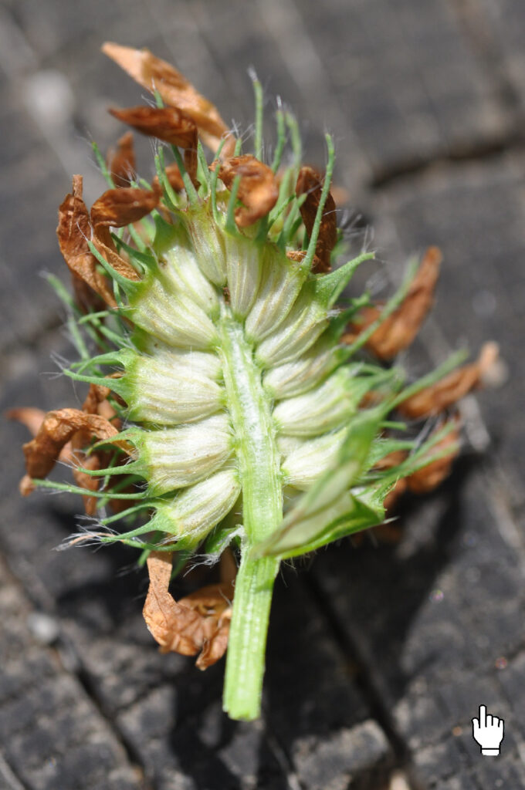
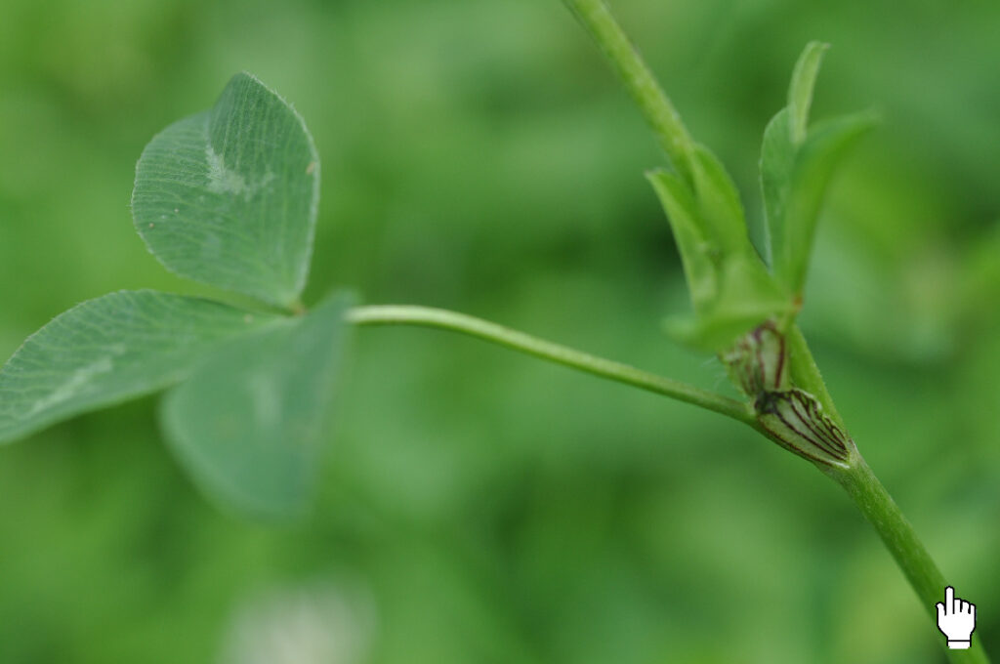
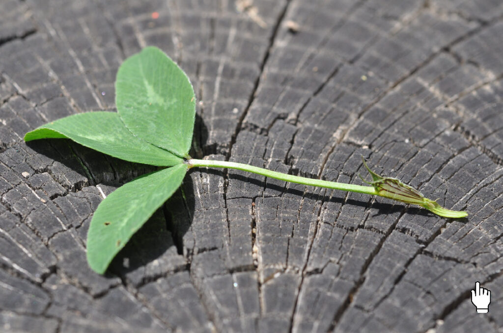
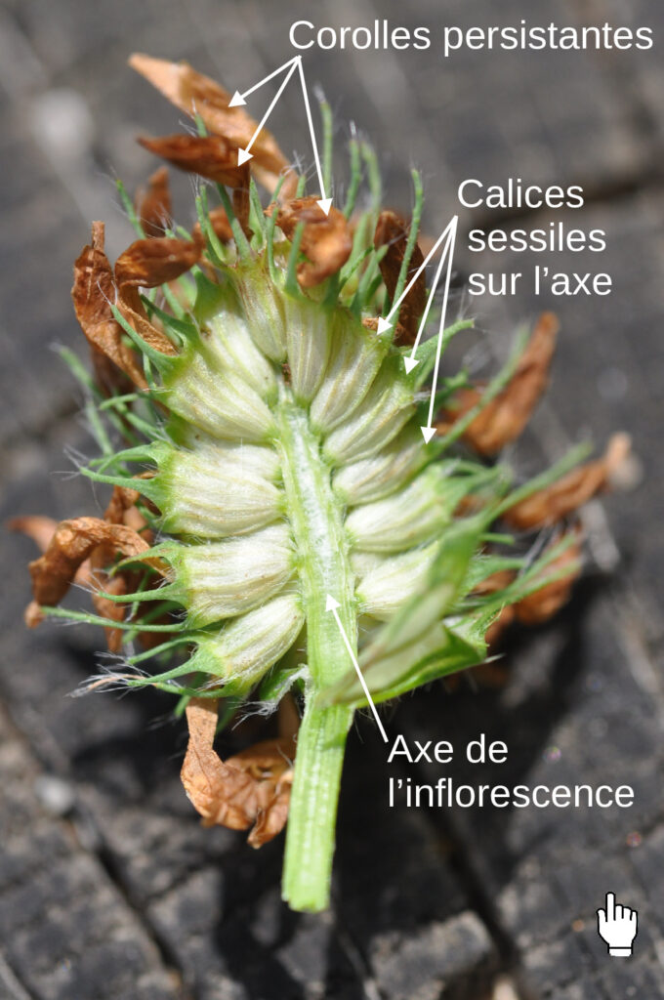
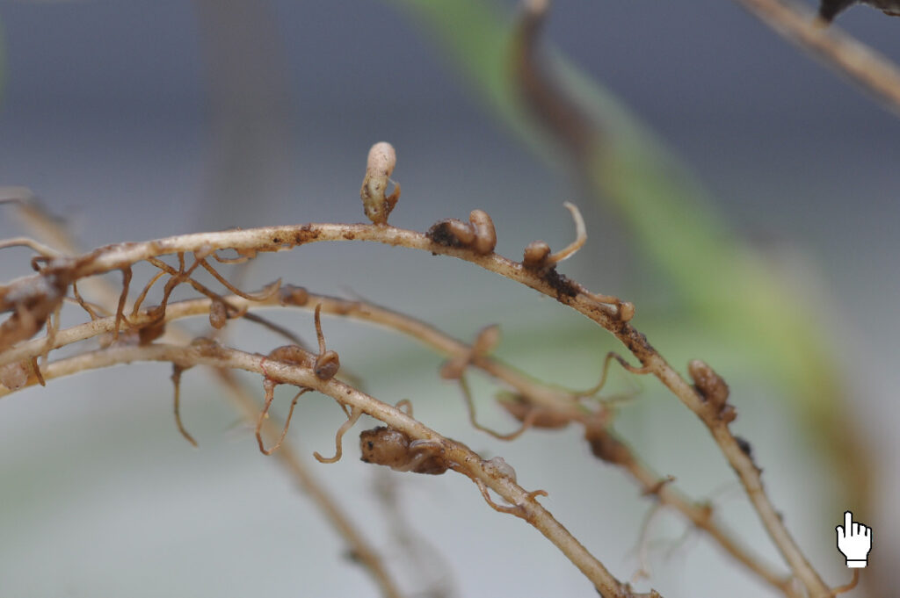

Voilà une petite Fabacée très courante, des gazons ou prairies pâturées.
Une tige souterraine : le rhizome
Son nom, Trifolium repens, fait référence à son port, rampant. Les feuilles émergent d’une tige applatie au sol, puis s’enfonçant dans le sol pour former un rhizome. Du rhizome peuvent émerger plusieurs parties aériennes : c’est une forme de multiplication végétative, caractéristique des plantes envahissantes.

Une corolle papilionacée
Tous les trèfles appartiennent à la famille des Fabacées : une famille commune avec le haricot, le genêt…etc. Il s’agit d’une des familles les plus faciles à identifier, grâce à la structure de sa fleur. En effet, la corolle (ensemble des pétales) est toujours formée de la même façon :
- un étendard, grand pétale supérieur
- deux ailes latérales, allongées
- une carène, formée de 2 pétales soudés à la base de la fleur
Cette organisation, que l’on retrouve chez toutes les Fabacées indigènes de France métropolitaine, est à l’origine de l’ancien nom de cette famille, « Papilionacée », en référence à la forme en papillon de la corolle.

Une inflorescence de type grappe
Chez le Trèfle, les fleurs sont regroupées en paquet : l’inflorescence. Sa forme en « pompon » est parfois nommée capitule par son aspect compact, mais l’axe allongé et la présence d’un pédoncule floral correspond plutôt à une inflorescence de type grappe.

(quelques fleurs ont été arrachées pour montrer l’insertion sur l’axe)

L’épi a été coupé en deux dans le sens de la longueur
Les fleurs du Trèfle blanc sont pédonculées : l’inflorescence est donc une grappe.
Chez son voisin le trèfle des prés (Trifolium pratense), aux fleurs roses, les fleurs sont sessiles : l’inflorescence est donc un épi.

Une corolle persistante et des feuilles trifoliolées
Comme tous les trèfles, Trifolium repens présente :
- une corolle persistante après fanaison
- des feuilles découpées, à trois folioles (et non trois feuilles ! )



Le fruit : une gousse, indéhiscente
Après pollinisation, les ovules évoluent en graines, contenues dans un fruit de type gousse, comme toutes les Fabacées. Particularité des Trèfles : la gousse ne s’ouvre pas à mâturité, elle est dite indéhiscente.

Des nodosités racinaires…fixatrices d’azote
Les Fabacées ont la particularité de vivre en association symbiotique avec des bactéries du sol, du genre Rhizobium. Elles sont hébergées par la plante, au niveau de renflements globuleux fixés sur les racines : les nodosités. Il est très facile de les voir, en déterrant une fabacée, elles mesures quelques millimètres de diamètre.
Les bactéries logées dans les nodosités sont capables de convertir le diazote atmosphérique (N2) en ions ammonium (NH4+), directement assimilable par la plante pour former des acides aminés, des molécules azotées nécessaires à la biosynthèse des protéines.
Comme le diazote est abondant dans l’atmosphère (78 % !), la ressource est inépuisable. La production de molécules organiques azotées (protéines, mais aussi acides nucléiques) est donc largement facilitée par cette association symbiotique.

En échange, la plante « nourrit » les Rhizobium , en fournissant la matière organique produite par photosynthèse. Il s’agit donc bien d’une symbiose : association étroite à bénéfice réciproque.
Cette capacité à fixer l’azote fait des Fabacées, et du Trèfle blanc en particulier, des plantes utilisées comme « engrais vert » : leur culture enrichit le sol en azote assimilable par les autres plantes, ainsi la consommation en engrais est diminuée d’autant.